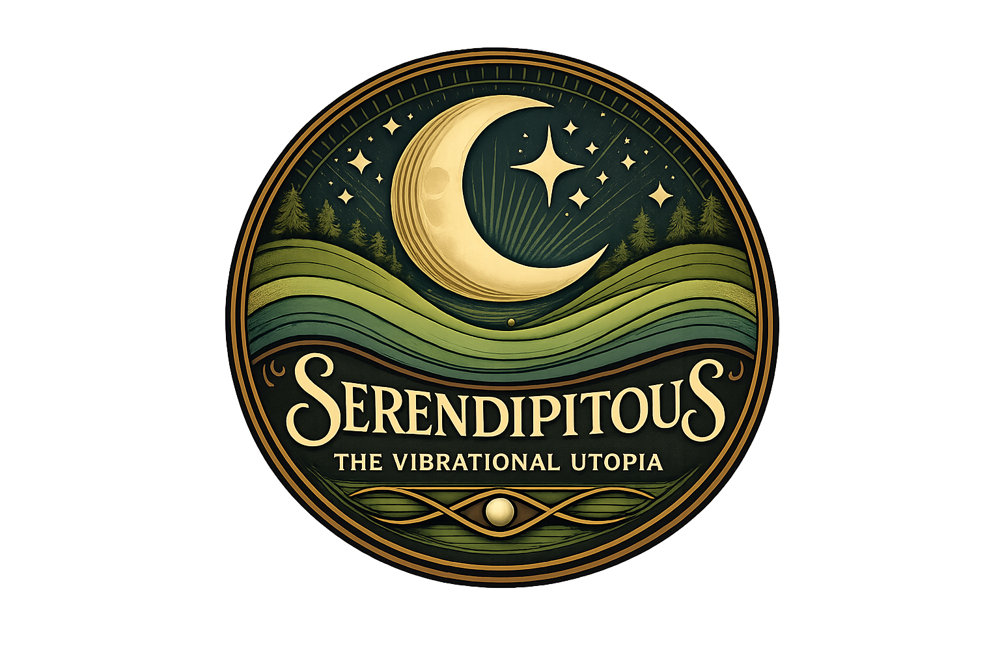
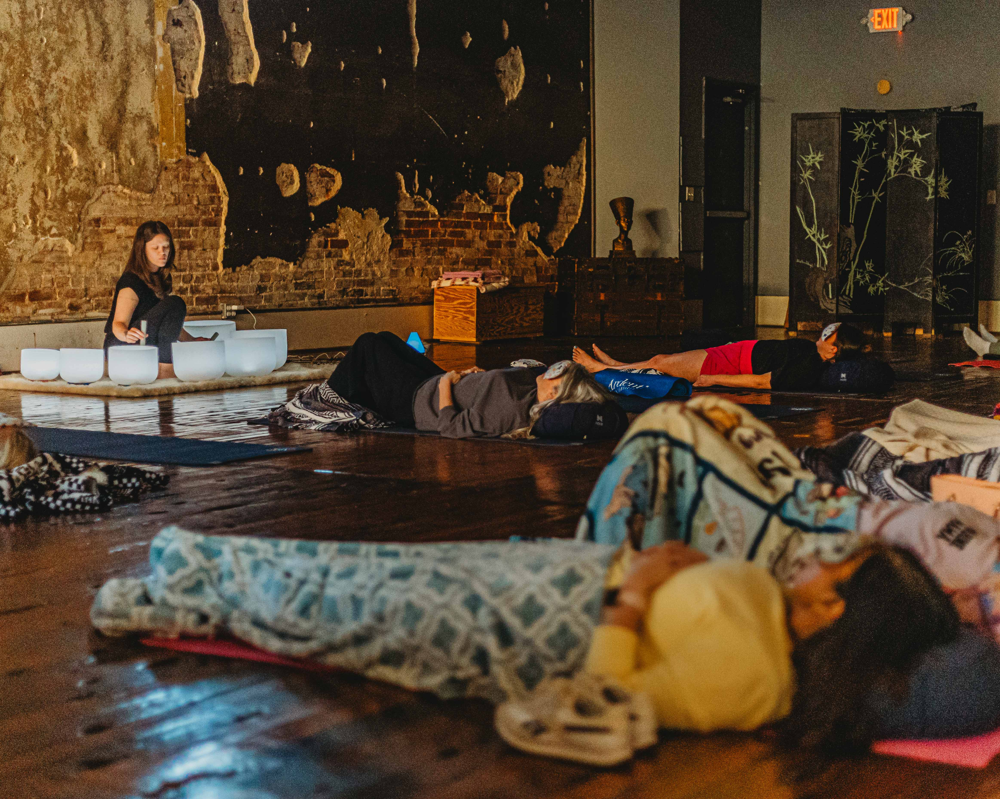

Tuning Sessions

Individual tuning fork sessions designed to encourage relaxation, quiet the mind, and create space to reconnect with yourself.

SOUND, STILLNESS & CONNECTION

Explore SessionsTHE PERSON BEHIND THE SOUND
My journey into holistic wellness began more than 13 years ago, during a very personal search for healing. After years of navigating mental health challenges, trying different medications and therapies, and feeling like I was running out of answers, I began exploring natural approaches to wellness.
What started as a desire to find better ways to support myself and my family eventually grew into a passion for learning, sharing, and educating others. Along the way, I discovered that wellness is not one-size-fits-all, and that everyone's journey deserves to be met with patience, compassion, and an open mind.
My own journey has included mental health struggles, addiction and recovery, domestic violence, kidnapping, and experiences with trauma that have deeply shaped the person I am today. I've experienced seasons of searching, surviving, rebuilding, and learning to find my way back to myself.
I speak openly about these experiences because I believe our stories matter. I want people to know that there is another side to the things we survive. Healing is possible. We can overcome experiences we once thought would define us, and we can grow into stronger, more compassionate, and more understanding versions of ourselves because of what we've lived through.
So many people carry things that aren't visible to the outside world. Sometimes hearing someone else speak honestly about their experiences gives us permission to acknowledge our own. I hope that by sharing pieces of my journey, others feel less alone and begin to see that their story isn't over. There is still room for healing, growth, joy, and a beautiful life beyond what they've experienced.
Over the years, I also realized that making lifestyle changes isn't always easy. I wanted to find ways to make wellness more accessible, something people could experience without feeling like they had another long list of things they needed to change.
That search led me to sound therapy. When I attended my first sound bath, I experienced something I had never known before: quiet in my mind. It was such a profound experience that I knew I wanted to share it with others.
As I began facilitating sound baths, I kept hearing the same words from participants: "My mind has never been this quiet before." Hearing those experiences reminded me that sometimes people don't need another thing to do. Sometimes they simply need space to pause, breathe, and be.
My exploration eventually led me to tuning forks and working with the body's energy centers. I began to see how different approaches could complement one another, creating opportunities to explore wellness on multiple levels.
Today, through sound therapy, tuning sessions, immersive gatherings, and holistic wellness education, my intention is to offer different pathways for people to reconnect with themselves and move toward a greater sense of wholeness.
I believe wellness doesn't have to look the same for everyone. By offering a variety of experiences, I hope to create a welcoming space where people at different stages of their journey can find something that speaks to them.
You don't have to have it all figured out. You just have to be willing to make space for yourself.
Empowering your journey through frequency, energy, and education.

Welcome to Serendipitous: The Vibrational Utopia.
A space devoted to sound, vibration, and intentional stillness. Through personalized sound therapy sessions, tuning sessions, immersive gatherings, and holistic wellness education, I invite you to slow down, reconnect with yourself, and explore the possibilities of vibrational wellness.
My approach brings together ancient healing tools and modern awareness, creating experiences that encourage relaxation, self-discovery, and a deeper connection between mind, body, and spirit.
Every experience is an invitation to pause, reconnect with yourself, and make space for stillness.
Your journey back to yourself begins here.
WAYS TO CONNECT
Individual tuning fork sessions designed to encourage relaxation, quiet the mind, and create space to reconnect with yourself.

A calming sound experience using singing bowls, tuning forks, chimes, and other vibrational tools. Each session offers an opportunity to slow down, quiet the mind, and settle into stillness.

Shared sound experiences for groups, private events, and special occasions. An immersive opportunity to relax, connect, and experience the calming atmosphere of sound together.
GATHER TOGETHER
Join me for a group sound bath, a special gathering, or a collaborative wellness event.
New events will be announced here as dates are scheduled.
View Upcoming Events Follow on FacebookEXPLORE & LEARN
Explore my collection of wellness resources, educational information, favorite products, book recommendations, and gluten-free recipes.
Explore My ResourcesLET'S CONNECT
Curious about a session or interested in bringing a sound experience to your event? Reach out to learn more about availability and options.
Email Me